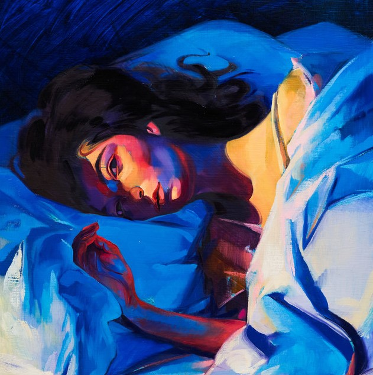

JonWhite.me
A simple retro website
2025-07-26
One of my guilty pleasures is doom-scrolling on Instagram. I'm not overly proud of it, but it's not all bad as I do find some inspirational gems from time-to-time. One of those gems has been Caro Kelley, a musician living in Germany who often posts about her quest to listen to 1000 albums in a year. She posts thoughts and reviews on the albums she's listened to and I find myself really enjoying this content especially when I don't agree with her. In any event, I was inspired by her to do something similar and I've spent the last few months listening to as many albums as possible. I recently hit the century mark so I thought it was time for me to do a recap of my own. So, here are 5 albums that surprised me in some way:

★★★★★★★★★☆
When I first heard Royals back in 2013 I really liked it. I liked Teams even better. But, after that I really didn't think about her again. Then I listened to Melodrama and now I can't stop. Her music drips with emotion and you can feel it coming out of the speakers.
★★★★★★★★★★
This album is beautiful and perfect. The name of the album is also perfect. Stevie captures so much joy and sadness in one album, perfectly encapsulating what it is like to be human. You can hear the influence of this album on so much modern music. Village Ghetto Land - challenges you to look into the darkest corners of humanity, Isn't She Lovely - celebrating the beauty of child, Black Man - celebrating the duality of man what makes us different and the same. It's a rollercoaster of emotions. Just like life.
★★★★★★☆☆☆☆
This was a surprise because, being born in 1981, when I think of Genesis I think of Invisible Touch. And this albums is nothing like that one. I had no idea that Genesis began as a prog rock band. I'm not even sure If I like it but its these little tidbits that make this journey so interesting and keep me listening.
★★★★★★★★☆☆
I had never heard of Magdalena Bay but I kept seeing this album pop up on a number of "best album" posts so I thought I'd give it a try. At first, I wasn't so sure about it but for some reason I kept coming back to it and the more I listened, the more I liked it. I have a softspot for pop and this is an excellent pop album that, for some reason, hasn't really hit the mainstream.
★★★★★★★★★★
The best thing to say about this album is that you actually feel what it's like to be in that small club in Miami in 1963. It places you there with your sweetheart as you're sweating your ass off and enjoying every second of it.